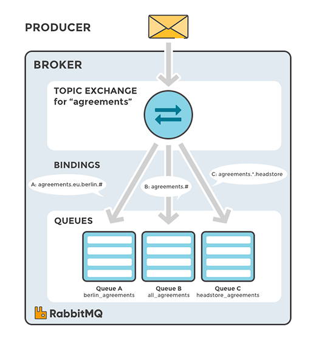

RabbitMQ
open source message broker
- Distributing data relevant to specific geographic location, for example, points of sale
- Background task processing done by multiple workers, each capable of handling specific set of tasks
- Stocks price updates (and updates on other kinds of financial data)
- News updates that involve categorization or tagging (for example, only for a particular sport or team)
- Orchestration of services of different kinds in the cloud
- Distributed architecture/OS-specific software builds or packaging where each builder can handle only one architecture or OS
Message
strict behavioural contracts between publisher and consumer
|
|
Message Ack
Message durability
Queue
Queues in RabbitMQ are ordered collections of messages. Messages are enqueued and dequeued (consumed) in the FIFO manner.
- Identified by name ("amq." is reserved)
- If you pass empty name then server will generate it.
Properties
- Durable
- Exclusive - can be used only by one connection is deleted when connection closes
- Auto-delete
- Additiona argument
Arguments
- Queue type (quorum or classic)
- Message and queue TTL
- Queue length limit
- Mirroring options
- Consumer priorities
Durability
- Durable queues are persisted to disk and thus survive broker restarts
- Queues that are not durable are called transient
- Durability of a queue does not make messages that are routed to that queue durable
Questions to ask when you declare queue
- Do you need to ensure that all messages are received or can they be discarded?
- Can you receive messages and then acknowledge or reject them as a batch operation?
- If not, can you use transactions to improve performance by automatically batching your individual operations?
- Do you really need transactional commit and rollback functionality?
- Does your consumers need exclusive access to the messages in the queue it’s consuming from?
- What should happen when your consumer encounters an error? Should the message be discarded? Requeued? Dead-letter?
Exchange

Direct

Fanout

Topic
Headers

Scaling
Clustering
Connects multiple machines together
Virtual hosts, exchanges, users, and permissions are automatically replicated across all nodes in a cluster. Queues may be located on a single node, or mirrored across multiple nodes.
A client connecting to any node in a cluster can use all non-exclusive queues in the cluster, even if they are not located on that node.
Federation
Allows an exchange or queue on one broker to receive messages published to an exchange or queue on another.
Federated exchanges and queues are connected with one way point-to-point links.
Typically you would use federation to link brokers across the internet for pub/sub messaging and work queueing.
Shovel
Consumes messages from a queue on one broker, and forwards them to an exchange on another.
Typically you would use the shovel to link brokers across the internet when you need more control than federation provides.
Dynamic shovels can also be useful for moving messages around in an ad-hoc manner on a single broker.
Supported protocols
AMQP
MQTT
STOMP
HTTP
Database integration
Publishing AMQP messages from PostgreSQL
Making RabbitMQ listen to PostgreSQL notifications
Using the InfluxDB storage exchange to store messages
Send message
{:ok, connection} = AMQP.Connection.open
{:ok, channel} = AMQP.Channel.open(connection)
AMQP.Queue.declare(channel, "hello")
AMQP.Basic.publish(channel, "", "hello", "Hello World!")
IO.puts " [x] Sent 'Hello World!'"
AMQP.Connection.close(connection)
Receive message
{:ok, connection} = AMQP.Connection.open
{:ok, channel} = AMQP.Channel.open(connection)
AMQP.Queue.declare(channel, "hello")
AMQP.Basic.consume(channel, "hello", nil, no_ack: true)
IO.puts " [*] Waiting for messages. To exit press CTRL+C, CTRL+C"
Receive.wait_for_messages()
defmodule Receive do
def wait_for_messages do
receive do
{:basic_deliver, payload, _meta} ->
IO.puts " [x] Received #{payload}"
wait_for_messages()
end
end
end